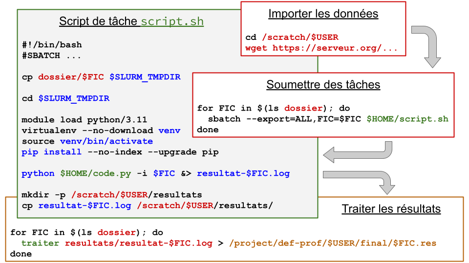

Les espaces de stockage
Contents
Les espaces de stockage#
Il y a plusieurs types de stockage à l’Alliance de recherche numérique du Canada :
Personnel (
/home)Temporaire local (
$SLURM_TMPDIR)Temporaire réseau (
/scratch)Projet partagé (
/project)Nearline de longue durée (
/nearline)
Or, vos données ont plusieurs aspects :
Taille : petits, gros, très gros fichiers
Nombre : peu nombreux ou en très grand nombre
Transférabilité : données regroupées et/ou compressées
Vie : pendant une tâche, entre des tâches, d’un projet à l’autre, à archiver
Niveau d’accès : données confidentielles, partagées, publiées
Le but de ce chapitre est de pouvoir considérer tous les aspects nécessaires à la gestion des données actives sur les différents espaces de stockage disponibles.
Caractéristiques de vos données#
Au second chapitre, nous avons vu comment obtenir le nombre de fichiers de nos données locales, de même que la taille totale.
Sur une grappe de calcul, un système de fichiers parallel Lustre ou GPFS est surtout optimisé pour des fichiers de plus de 10 Mo, c’est-à-dire pour des accès à large bande-passante. Ainsi, à l’échelle des grappes de calcul :
1 Ko - 100 Ko : très petit fichier
1 Mo - 10 Mo : petit fichier
100 Mo - 1 Go : taille raisonnable
10 Go - 100 Go : gros fichier
1 To - 10 To : très gros fichier
À quantité totale égale d’octets, il est plus difficile pour Lustre de gérer un grand nombre de petits fichiers qu’un plus petit nombre de grands fichiers. Ainsi, du point de vue du système de stockage :
Par dossier :
1 à 100 fichiers par dossier : c’est raisonnable
300 à 3k fichiers par dossier : une lourdeur se fait sentir
10k fichiers et plus : il faut classer les fichiers dans des sous-dossiers
Par espace limité par un quota :
1 à 500k fichiers : sauvegarde facilement à jour
1M à 5M fichiers : sauvegarde potentiellement plus longue que 24h
10M fichiers et plus : sauvegarde plus longue que 24h
Transférabilité#
Regroupement dans un fichier archive#
Étant donné que le transfert ou la synchronisation de plusieurs petits fichiers implique un accès fréquent aux métadonnées du système de stockage Lustre, il est donc préférable de regrouper les fichiers d’un jeu de données avant tout transfert. Pour ce faire, il existe plusieurs formats décodables sur les différentes grappes :
WinZip ou Zip (.zip) - compressé
man zip # q pour quitter
7-Zip (.7z) - compressé
man 7z # q pour quitter
Tape ARchive ou TAR (.tar) - non compressé, sauf si utilisé avec Gzip ou autre
man tar # q pour quitter
Disk ARchive ou DAR (.dar) - compression configurable
man dar # q pour quitter
Compression des fichiers#
La compression des fichiers a un coût en temps CPU à chaque fois que nous voulons lire ou écrire les données. Ainsi, il vaut mieux utiliser la compression lorsque c’est « avantageux » en espace et/ou en temps. Par exemple :
Décompresser de nombreux fichiers sur le noeud de calcul plutôt que de lire chaque petit fichier de Lustre.
Concernant les fichiers binaires tels que FLAC, JPEG, PDF, PNG, etc., leur encodage inclut déjà une compression des données.
Selon le type de données que vous utilisez dans votre domaine de recherche, il se pourrait qu’elles soient déjà compressées. À vous de vérifier.
Habituellement, on gagne peu d’espace à compresser davantage ces fichiers.
Exercice - DAR
Dans un terminal :
dar -w -c arch -g donnees -g images
-w: pour taire un avertissement d’écrasement d’archive existante-c: pour créer l’archivearch-g: pour spécifier un fichier ou dossier à la fois
ls arch*
dar -l arch
-l: pour lister les fichiers dans l’archive DARarchNote : ne pas fournir le nom d’une découpe avec l’extension
.1.dar
dar -w -z -c arch -g donnees -g images
-z: pour activer la compression pour tous les fichiersVoir le résultat avec
dar -l arch
dar -w -z -Z '*.png' -c arch -g donnees -g images
-Z '*.png': pour exclure les fichiers PNGVoir le résultat avec
dar -l arch
Les deux (2) types de compression#
Compression explicite :
Lorsque vous utilisez un outil de compression (
gzip,zip, etc.)Lorsque l’encodage permet de compresser les données (
dar, bibliothèquezlib, etc.)Lors d’un transfert avec la commande
rsync, il existe des options permettant de compresser automatiquement les données lors du transfert. Cela étant dit, le transfert risque d’être limité par la vitesse du processeur…
man rsync # Chercher: /compress + n, Quitter: q
Compression implicite :
Lorsque le système de fichiers compresse automatiquement vos données avant de les écrire sur le système de stockage :
La commande
dumontre l’espace réellement utilisée sur le disqueLa commande
du --apparent-sizemontre la taille normale du fichier
Lorsque le format du fichier de données inclut une compression des données. Voici quelques exemples :
Hierarchical Data Format - HDF5 - format standard pour données scientifiques
Apache Parquet - stockage compressé de données tabulaires
Note: l’autre format, Apache Feather, ne compresse pas vraiment les données, sauf si on considère que c’est un format binaire prenant moins de place
Exercice - Espace utilisé
Dans un terminal Jupyter, essayez les commandes :
du -s ~
du -s --apparent-size ~
Notez les différences, s’il y en a
Notez à quel point cette commande peut surcharger le système de stockage; le survol récursif des fichiers constitue un grand nombre d’accès aux métadonnées de Lustre
En pratique, les grappes de calcul offrent des outils efficaces pour mesurer l’espace utilisé en fonction de l’espace alloué. Nous verrons cela à la fin du chapitre.
Les différents types de stockage#
Stockage accessible selon le type de noeud : noeud de connexion (ou interactif) ou noeud de calcul (CPU ou GPU) :
Stockage |
Connexion |
Calcul |
|---|---|---|
|
Oui |
Oui* |
|
Non |
Oui |
|
Oui |
Oui |
|
Oui |
Oui |
|
Oui |
Non |
|
À propos des différents espaces de stockage.
Votre dossier personnel ($HOME)#
ls -a
ls -la
ls -ld $HOME
Point d’entrée par défaut lors d’une connexion à une grappe de calcul
Quota d’espace relativement petit, mais accepte un nombre de fichiers relativement grand
Idéal pour la compilation et l’installation de logiciels
Dossier temporaire local ($SLURM_TMPDIR)#
ls -ld $SLURM_TMPDIR
salloc # À partir de login1
ls -ld $SLURM_TMPDIR
df -h $SLURM_TMPDIR
exit
Stockage local très rapide, mais limité à la durée de la tâche de calcul
Faible latence à comparé Lustre
Grande bande-passante, en particulier pour les petits fichiers
Données supprimées à la fin de la tâche de calcul
Si plusieurs noeuds travaillent sur un même calcul parallèle, chaque noeud a son propre dossier
$SLURM_TMPDIR
Cas d’utilisation :
Importation de plusieurs petits fichiers qui seront utilisés à répétition lors d’un calcul
Sauvegarde de fichiers qui sont constamment modifiés - à exporter vers Lustre à la fin du calcul
Espace réseau pour données temporaires ($SCRATCH)#
df -h /scratch
ls -ld $SCRATCH
# Enlever l'accès en lecture
chmod g-r $SCRATCH
ls -ld $SCRATCH
# Modifier le GID du répertoire
id
chgrp def-sponsor00 $SCRATCH
ls -ld $SCRATCH
# Création d'un dossier de résultats partagés
mkdir -p $SCRATCH/partage/resultats
ls -lR $SCRATCH
# Ajouter les permissions r (et x, s'il y a lieu) récursivement
chmod -R o+rX $SCRATCH/partage
ls -lR $SCRATCH
# Visiter le dossier partagé de quelqu'un d'autre
cd /scratch/userXY/partage
pwd
ls -l
cd $HOME
Espace de stockage réseau de grande capacité pour des données temporaires
Pas sauvegardé
Purge mensuelle pour les données âgées de plus de 60 jours
Performance variable selon l’utilisation de l’ensemble des utilisateurs
Cas d’utilisation :
Utilisation de données pendant quelques jours seulement
Stocker temporairement des résultats en grand nombre de fichiers
Stocker des résultats intermédiaires qui sont trop gros pour
/project
Espace projet partagé (/project)#
ls -ld /project
ls -ld /project/def-sponsor00
ls -l /project/def-sponsor00
Espace de stockage réseau de petite à grande capacité pour des données de projet
Un espace projet par défaut par groupe de recherche (sauf sur Niagara)
Petite augmentation d’espace projet sur simple demande (jusqu’à 10 To)
Quota plus élevé si allocation spéciale
Sauvegardé quotidiennement
Nombre de fichiers relativement limité (500k par défaut)
Données de projet :
Potentiellement partagées - configuration des ACLs
Durée de vie en fonction de la durée d’un projet
Typiquement plus importantes que les données temporaires
Cas d’utilisation :
Stockage de jeux de données réutilisés sur plusieurs mois et/ou par plusieurs personnes
Stockage de résultats finaux coûteux à reproduire
Stockage très longue durée (/nearline)#
Interface de stockage sur disque :
On peut voir les fichiers avec la commande
lsLes données les plus anciennes dans
/nearlinesont probablement sur rubanVoir les commandes pour diagnostiquer l’état des fichiers dans
/nearline
À considérer :
D’une part, la migration de données sur ruban réduit l’espace utilisé sur les disques - économie d’argent pour le stockage
D’autre part, chaque lecture de fichier migré sur ruban créera une requête bloquante causant un temps de réponse de quelques minutes à quelques heures (si le système d’archivage est surchargé de requêtes)
Voilà pourquoi il est impératif d’y sauvegarder un faible nombre de très grands fichiers
À éviter : y copier de nombreux petits fichiers avant de les regrouper dans un fichier d’archive
Cas d’utilisation :
Les commandes
7z,dar,taretzipdevraient uniquement regrouper des fichiers provenant de/projectou de/scratchStockage de données importantes qui ne seront pas utilisées pendant plusieurs mois
Exemple de cycle de vie des données#

Description des différentes étapes :
Téléchargement des données dans
/scratchPour une utilisation de quelques jours à quelques semaines
Nul besoin de les protéger davantage
Soumettre une série de tâches de calcul
Une tâche par fichier dans
dossierdans la partition/scratch
Le script de tâche est dans la partition
/homeUtilisation des variables
$FICet$SLURM_TMPDIRpour copier le fichier à traiter localement sur le noeud de calculSe déplacer dans le dossier local
Y configurer un environnement Python
Exécuter le code Python présent dans
/home, fournir le nom du fichier à traiter et rediriger toutes les sorties dans un fichier localRapatrier le fichier de résultats dans un dossier dans
/scratch
Post-traitement - traiter tous les fichiers de résultats afin de ne garder que l’essentiel dans
/project
Exercice - Exécution d’un pipeline#
Étudiez les scripts :
scripts/blastn-pipeline.shscripts/blastn-traitement.sh
Lancez le pipeline avec la commande :
bash scripts/blastn-pipeline.sh
Surveillez les tâches avec
squeue -u $USERTrouver les fichiers créés dans :
$SCRATCH/donneeset$SCRATCH/donnees/res_prll
Lancez le post-traitement avec la commande :
bash scripts/blastn-traitement.sh
Trouvez le fichier TSV dans l’espace projet
Gestion du stockage#
Avec le temps, les données s’accumulent. Il devient alors nécessaire de surveiller l’espace utilisé, de même que le nombre de fichiers qui s’y trouvent.
df -h /project
df -hi /project
La commande
diskusage_reportpermet de générer un court rapport sur l’espace utilisé et le nombre de fichiers de chacun des espaces de stockage auxquels vous avez accèsÀ chaque jour, un rapport de consommation de l’espace
/projectpar utilisateur est produit :Sur Béluga : dans
/project/.stats/<nom-allocation>Sur Cedar et Narval : dans
/project/.stats/<nom-allocation>.jsonDisponible sur demande pour Graham et Niagara
Sur Béluga et Narval, il existe aussi un outil plus avancé : la commande
diskusage_explorerUtilise les données en format SQLite générées quotidiennement dans
/project/.duc_databases/Permet d’avoir des statistiques de consommation du stockage par répertoire, ce qui évite d’utiliser la commande
du -sh *
En cas de données inaccessibles#
Une professeure ou un professeur peut demander à ce que les données soient supprimées
Par contre, pour obtenir l’accès aux données, il faut avoir le consentement de la personne qui les a isolées (probablement involontairement)
En cas d’absence de réponse, c’est la politique de l’université du groupe de recherche qui permettra ou non d’obtenir l’accès aux données
Dans tous les cas, il vaut mieux planifier, et ce, dès l’importation de données sur les grappes de calcul.
Points à retenir#
Le système de fichiers Lustre est optimisé pour des gros fichiers (+10 Mo)
Ne pas mettre trop de fichiers et dossiers dans un même répertoire (maximum 1000 items)
Pour le transfert de données et l’utilisation du Nearline, il vaut mieux regrouper les données dans un fichier archive (comme Zip, DAR, etc.)
Dans l’espace projet, il faut planifier qui devrait avoir accès à quoi et quand
Pour optimiser les tâches, utiliser
$SLURM_TMPDIRLa commande
diskusage_reportpour un aperçu de l’espace utiliséPour les données et codes critiques :
avoir une copie ailleurs et
utiliser un gestionnaire de versions.